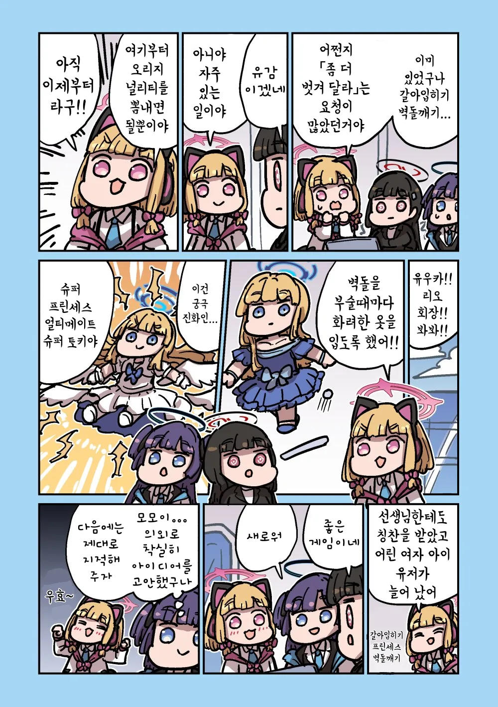
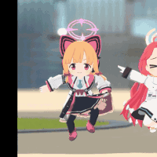
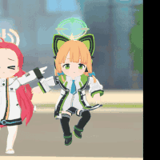

ㅆㄷ) 노력하는 모모이
댓글


가끔 훈훈하려고 좀 밋밋할때가 있는데
자극적이어서 토나오는거보단 나은거 같음
처먹게나
처먹게나
게임개발부 대모험!이었다면)
모모이 "유료 DLC로 센세를 추가할 거야. 법 문제로 몇몇 부분에 김과 모자이크를 넣을 수밖에 없겠지만, 유즈가 익명으로 인터넷에 김과 모자이크를 지워주는 프로그램을 뿌려서 퍼뜨리면 돼. 이후로 보추 센세, TS 센세 등의 추가 DLC를 내놓으면 우리 게임은 크게 성공할 거야."
유즈 "으에에..."
아리스 "유즈가 뭔가 이상합니다."
미도리 "김과 모자이크가 성공적으로 지워지는지 일일이 확인해서 그래."
(결국 베리타스에게 1초만에 노모 프로그램 유포한 게 유즈인 걸 들켜 세미나에 끌려가고, DLC는 판매 중지당하고 압수당한다.)
탈의 벽돌깨기가 아니라 환복 벽돌깨기네 ㅋㅋㅋ


우효~
몸모이 의젓해~
둠칫둠칫
난 이 만화 볼때마다 너무 훈훈해서 좀 어색해요